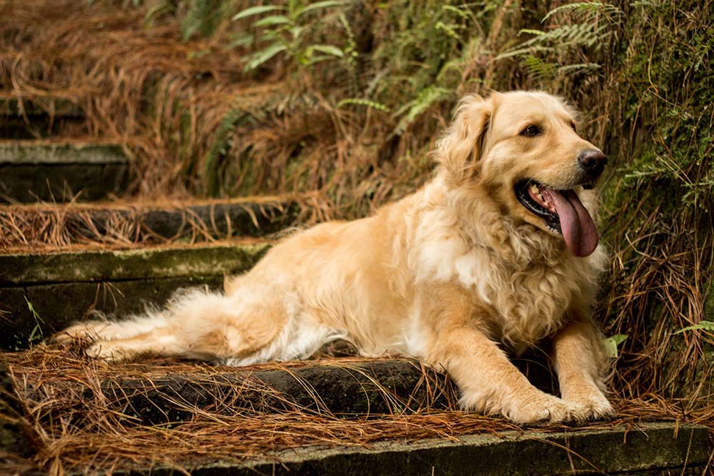

Los golden son juguetones, aunque dóciles con los niños, y tienden a llevarse bien con otras mascotas y con los extraños. Estos perros tienen ganas de agradar, lo que probablemente explique por qué responden tan bien al adiestramiento en obediencia, hecho que hace que sean perros de apoyo muy populares.
| juguetones | los aman | eligen |
|---|---|---|
|  | |
|